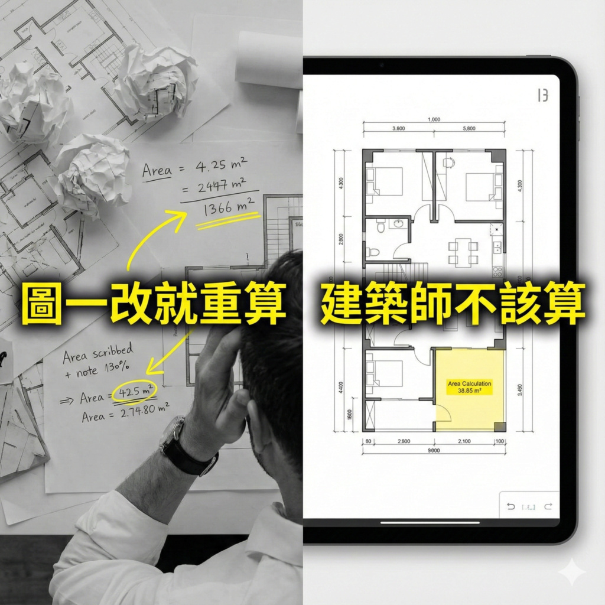

😣 面積分割算到想翻桌 這支神器直接完成計算式 ⚡
https://www.youtube.com/shorts/3eOCjUllgbE
每次圖一改
分割面積計算就要重來？
建築師不該把時間浪費在這裡。

https://www.autocad-tw.com/t30210-topic
#建築師 #AutoCAD #面積計算 #施工圖 #CAD自動化 #AutoCAD顧問
-------------
歡迎加入 Youtube 頻道會員(NT15元)
😁支持我們製作更多優質教學